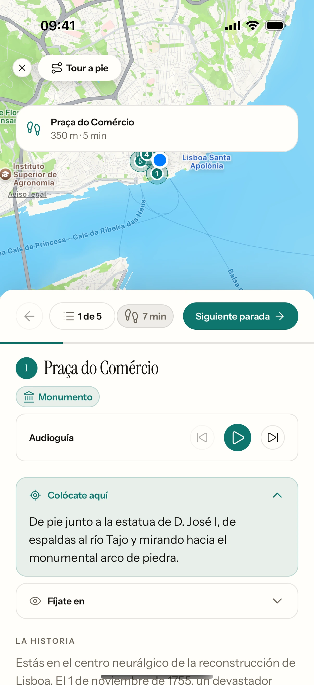
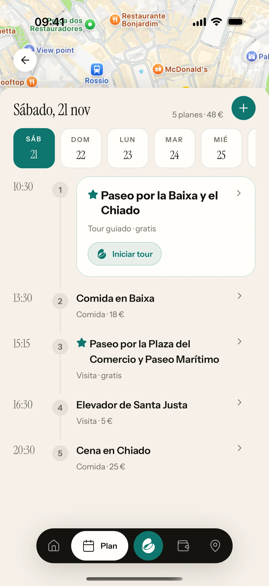
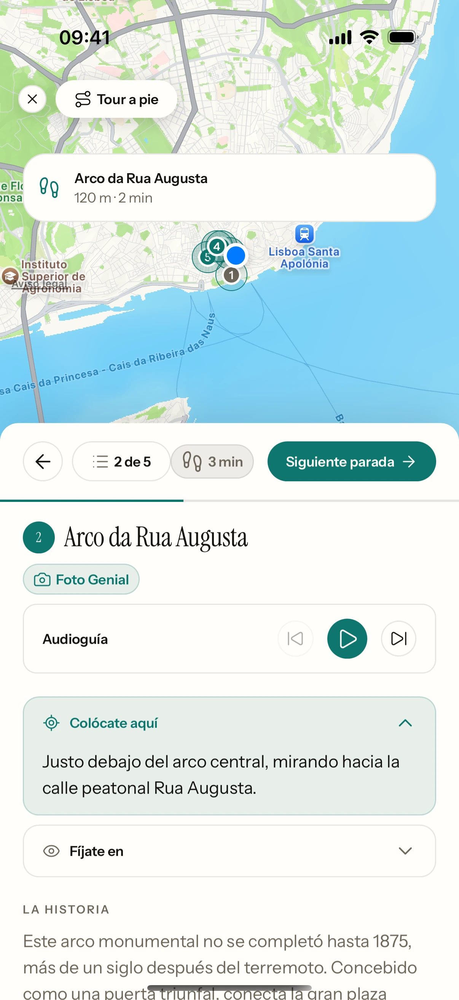
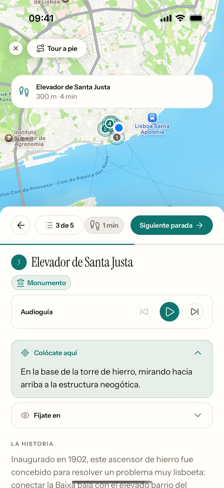
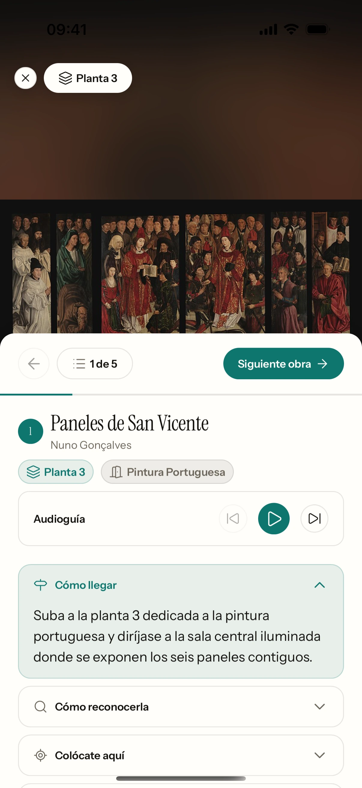
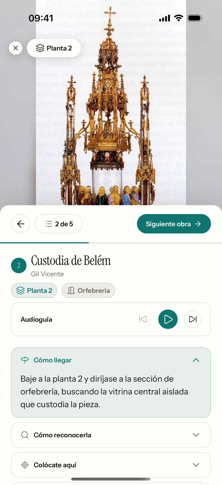

hazme un plan para 3 días en lisboa
Claro. Aquí tienes 3 días en Lisboa:
Día 1 · Baixa y Chiado
•Praça do Comércio
Estás aquí
•Arco da Rua Augusta
•Elevador de Santa Justa
•Convento do Carmo
Día 2 · Belém
•Monasterio de los Jerónimos
•Torre de Belém
•Pastéis de Belém
Día 3 · Alfama
•Castillo de San Jorge
•Mirador de Santa Luzia
•Tranvía 28
Asistente de IA
Nomad
· Primer viaje gratis esta semana
Una IA te hace la lista
en diez segundos.
Pero cuando estás allí,
¿quién te cuenta
lo que tienes delante?






Nomad
Audioguía · parada 1 de 5
El 1 de noviembre de 1755,
un devastador terremoto
seguido de un maremoto
y un incendio voraz
destruyó el antiguo
Palacio Real que se erigía
exactamente
en este espacio.
Eso es Nomad.
Te guía a pie,
parada a parada.
Y en el museo,
obra a obra.
Nomad
Semana de Black Friday
Tu primer
viaje,
gratis.
Hasta el 3 de diciembre.
Un viaje gratis por cuenta.

Nomad: guía de viajes


Tu primer viaje, gratis
hasta el 3 de diciembre.
Un viaje gratis por cuenta.
Después, desde 2,99 € el viaje.
Enlace en el perfil
App Store es una marca de servicio de Apple Inc.
Google Play y el logotipo de Google Play son marcas comerciales de Google LLC.